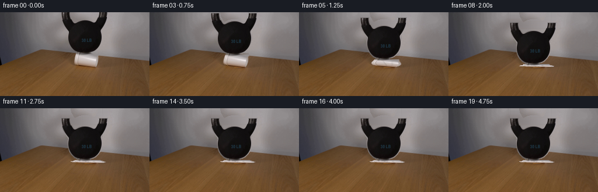
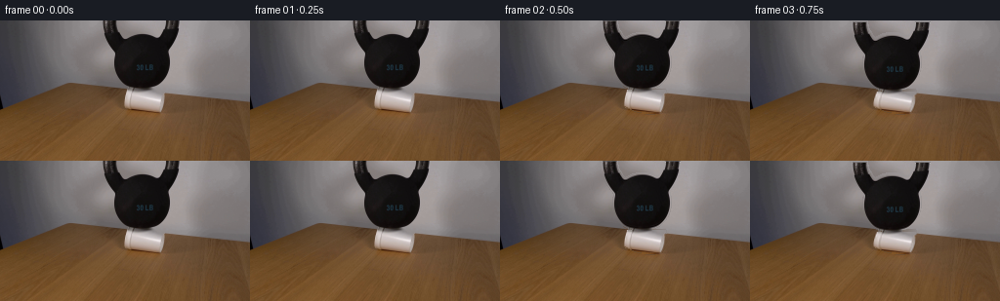

CODING AGENTS AS PIXEL WORLD MODELS
traex/GPT-5.6-Sol · 0192
点击播放 · 原生 RGB 像素
逐轮保存的候选
回放视频、检查图与代码变化。
每份候选均可单独播放。实际图片检查记录在下方工具轨迹中。
候选 01播放与检查图
点击播放 · 原生 RGB 像素


展开代码变化
--- 上一保存版本
+++ 本次保存版本
@@ -0,0 +1,219 @@
+"""Generate the requested locked-camera cup compression demonstration.
+
+The supplied first frame is used both as the immutable first output frame and
+as the texture source for the two physical objects. All subsequent motion is
+an analytic 2-D deformation: the cup shortens and buckles while the heavy
+kettlebell follows it downward and settles.
+"""
+
+from pathlib import Path
+
+import cv2
+import numpy as np
+
+import artifact_io
+
+
+HERE = Path(__file__).resolve().parent
+H, W = 144, 256
+
+
+def _largest_seeded_component(binary: np.ndarray, seed=(145, 40)) -> np.ndarray:
+ """Return the component containing seed in a uint8 binary image."""
+ _, labels, _, _ = cv2.connectedComponentsWithStats(binary.astype(np.uint8), 8)
+ label = labels[seed[1], seed[0]]
+ if label == 0:
+ raise RuntimeError("kettlebell segmentation seed missed the foreground")
+ return labels == label
+
+
+def _object_masks(first: np.ndarray):
+ # The bell is the one very dark connected object in the upper centre. A
+ # conservative dark core plus a two-pixel expansion retains its soft,
+ # photographed boundary without including the neutral wall.
+ gray = cv2.cvtColor(first, cv2.COLOR_RGB2GRAY)
+ yy, xx = np.mgrid[:H, :W]
+ candidate = (gray < 94) & (xx >= 100) & (xx <= 188) & (yy <= 72)
+ bell_core = _largest_seeded_component(candidate)
+ bell = cv2.dilate(bell_core.astype(np.uint8), np.ones((3, 3), np.uint8), iterations=1)
+ # Keep the expansion tightly tied to the measured silhouette.
+ bell[(xx < 99) | (xx > 189) | (yy > 73)] = 0
+ bell_alpha = cv2.GaussianBlur(bell.astype(np.float32), (3, 3), 0.42)
+ bell_alpha = np.clip(bell_alpha, 0.0, 1.0)
+
+ # The cup is neutral white but sits across a strongly varying wood/wall
+ # boundary, so its measured silhouette is more reliable than a colour key.
+ cup = np.zeros((H, W), np.uint8)
+ polygon = np.array(
+ [[128, 71], [169, 71], [168, 84], [167, 89], [165, 94],
+ [151, 95], [137, 92], [127, 87]], np.int32
+ )
+ cv2.fillPoly(cup, [polygon], 255)
+ cup_alpha = cv2.GaussianBlur(cup.astype(np.float32) / 255.0, (3, 3), 0.38)
+ return bell_alpha, cup_alpha
+
+
+def _clean_plate(first: np.ndarray, bell_alpha: np.ndarray, cup_alpha: np.ndarray) -> np.ndarray:
+ """Reconstruct the small parts of wall/table hidden in frame zero."""
+ src = first.astype(np.float32)
+ plate = src.copy()
+ ygrid, xgrid = np.mgrid[:H, :W]
+
+ # Reconstruct the neutral wall behind the bell row-by-row. Values at both
+ # sides of the silhouette are sampled from this very frame. Smooth colour
+ # interpolation matches the broad real lighting gradient; low-amplitude
+ # residual copied from nearby wall avoids an unnaturally flat patch.
+ wall_hole = bell_alpha > 0.015
+ for y in range(74):
+ left = np.median(src[y, 96:103], axis=0)
+ right = np.median(src[y, 188:197], axis=0)
+ xs = np.arange(W, dtype=np.float32)
+ q = np.clip((xs - 101.0) / 88.0, 0.0, 1.0)[:, None]
+ # Smoothstep gives a more photographic broad pool of light than a
+ # mechanically straight ramp.
+ q = q * q * (3.0 - 2.0 * q)
+ row = left[None, :] * (1.0 - q) + right[None, :] * q
+ # Deterministic texture comes solely from adjacent pixels.
+ texture = src[y, np.clip(65 + (np.arange(W) % 35), 0, W - 1)]
+ texture -= cv2.GaussianBlur(texture[None, :, :], (9, 1), 0)[0]
+ row += 0.28 * texture
+ use = wall_hole[y]
+ plate[y, use] = row[use]
+
+ # Continue the local table/wall boundary through the cup footprint. The
+ # endpoints are immediately adjacent to the cup and therefore preserve the
+ # unusual perspective line and the wood colour on every scanline.
+ cup_hole = cup_alpha > 0.015
+ for y in range(69, 98):
+ left = np.median(src[y, 119:125], axis=0)
+ right = np.median(src[y, 172:178], axis=0)
+ xs = np.arange(W, dtype=np.float32)
+ q = np.clip((xs - 123.0) / 51.0, 0.0, 1.0)[:, None]
+ row = left[None, :] * (1.0 - q) + right[None, :] * q
+ # Carry a restrained amount of the neighbouring wood grain through.
+ tex_idx = np.clip(82 + ((np.arange(W) - 82) % 38), 0, W - 1)
+ texture = src[y, tex_idx] - cv2.GaussianBlur(src[y, tex_idx][None], (7, 1), 0)[0]
+ row += 0.35 * texture
+ use = cup_hole[y]
+ plate[y, use] = row[use]
+
+ return np.clip(plate, 0, 255).astype(np.uint8)
+
+
+def _composite(dst: np.ndarray, rgb: np.ndarray, alpha: np.ndarray) -> np.ndarray:
+ a = np.clip(alpha, 0.0, 1.0)[..., None]
+ return dst * (1.0 - a) + rgb * a
+
+
+def _warp_bell(first: np.ndarray, alpha: np.ndarray, dy: float):
+ mat = np.array([[1.0, 0.0, 0.0], [0.0, 1.0, dy]], np.float32)
+ rgb = cv2.warpAffine(
+ first.astype(np.float32), mat, (W, H), flags=cv2.INTER_LANCZOS4,
+ borderMode=cv2.BORDER_CONSTANT, borderValue=(0, 0, 0)
+ )
+ a = cv2.warpAffine(
+ alpha, mat, (W, H), flags=cv2.INTER_LINEAR,
+ borderMode=cv2.BORDER_CONSTANT, borderValue=0
+ )
+ return rgb, a
+
+
+def _warp_cup(first: np.ndarray, alpha: np.ndarray, compression: float):
+ """Inverse-map the photographed cup into a shortened, buckled shape."""
+ p = float(np.clip(compression, 0.0, 1.04))
+ top = 71.5 + 17.7 * p
+ bottom = 94.0
+ height = max(3.8, bottom - top)
+
+ yd, xd = np.mgrid[:H, :W].astype(np.float32)
+ v = np.clip((yd - top) / height, 0.0, 1.0)
+
+ # A styrofoam wall bows out under axial load. At larger compression its
+ # centreline also acquires a lateral S-buckle instead of scaling rigidly.
+ bow = np.clip(np.sin(np.pi * v), 0.0, 1.0)
+ flare = 1.0 + 0.12 * p + 0.34 * p * bow ** 1.35
+ onset = np.clip((p - 0.18) / 0.82, 0.0, 1.0)
+ shift = onset * (4.8 * np.sin(np.pi * v) - 2.7 * np.sin(2.0 * np.pi * v))
+ # A slight lower-wall kink becomes visible just before complete collapse.
+ shift += onset * onset * 1.8 * np.sin(3.0 * np.pi * v)
+
+ xs = (148.0 + (xd - 148.0 - shift) / flare).astype(np.float32)
+ ys = (71.5 + v * (94.0 - 71.5)).astype(np.float32)
+ outside = (yd < top - 1.0) | (yd > bottom + 1.0)
+ xs[outside] = -10.0
+ ys[outside] = -10.0
+
+ rgb = cv2.remap(
+ first.astype(np.float32), xs, ys, cv2.INTER_CUBIC,
+ borderMode=cv2.BORDER_CONSTANT, borderValue=(0, 0, 0)
+ )
+ a = cv2.remap(
+ alpha, xs, ys, cv2.INTER_LINEAR,
+ borderMode=cv2.BORDER_CONSTANT, borderValue=0
+ )
+
+ # Creases are illumination changes on the original cup texture, not newly
+ # drawn objects. Two soft diagonal folds appear only as buckling advances.
+ xfold1 = 145.0 + shift + 5.0 * (v - 0.45)
+ xfold2 = 157.0 + shift - 5.5 * (v - 0.55)
+ crease = np.exp(-0.5 * ((xd - xfold1) / 1.15) ** 2)
+ crease += 0.65 * np.exp(-0.5 * ((xd - xfold2) / 1.35) ** 2)
+ crease *= onset * bow * a
+ rgb *= (1.0 - 0.19 * crease[..., None])
+ # A narrow highlight alongside a fold preserves the foamy white material.
+ ridge = np.exp(-0.5 * ((xd - xfold1 - 2.0) / 0.8) ** 2) * onset * bow * a
+ rgb += 10.0 * ridge[..., None]
+ return np.clip(rgb, 0, 255), np.clip(a, 0, 1)
+
+
+def _contact_shadow(plate: np.ndarray, p: float) -> np.ndarray:
+ """Soft, table-bound shadow that tightens as the bell nears the surface."""
+ yy, xx = np.mgrid[:H, :W].astype(np.float32)
+ # It is centred at the contact and confined below the table's local horizon.
+ sx = 20.0 - 5.0 * p
+ sy = 3.8 - 1.1 * p
+ shadow = np.exp(-0.5 * (((xx - 150.0) / sx) ** 2 + ((yy - 94.0) / sy) ** 2))
+ lower = 1.0 / (1.0 + np.exp(np.clip(-(yy - 89.0) * 1.8, -60.0, 60.0)))
+ strength = (0.06 + 0.13 * p) * shadow * lower
+ return plate.astype(np.float32) * (1.0 - strength[..., None])
+
+
+def generate() -> np.ndarray:
+ first = cv2.cvtColor(cv2.imread(str(HERE / "first_frame.png")), cv2.COLOR_BGR2RGB)
+ if first is None or first.shape != (H, W, 3):
+ raise RuntimeError("first_frame.png must be a 256x144 RGB image")
+
+ bell_alpha, cup_alpha = _object_masks(first)
+ plate = _clean_plate(first, bell_alpha, cup_alpha)
+
+ # Initial hold, rapid yielding under 30 lb, one damped rebound, then rest.
+ progress = np.array([
+ 0.00, 0.00, 0.025, 0.10, 0.27,
+ 0.55, 0.82, 0.99, 1.035, 0.972,
+ 1.012, 0.995, 1.003, 1.00, 1.00,
+ 1.00, 1.00, 1.00, 1.00, 1.00,
+ ], dtype=np.float32)
+
+ frames = []
+ for index, p in enumerate(progress):
+ # Contract requirement and a useful clean static beat before motion.
+ if index <= 1:
+ frames.append(first.copy())
+ continue
+ canvas = _contact_shadow(plate, float(p))
+ cup_rgb, cup_a = _warp_cup(first, cup_alpha, float(p))
+ canvas = _composite(canvas, cup_rgb, cup_a)
+ bell_rgb, bell_a = _warp_bell(first, bell_alpha, 17.7 * float(p))
+ canvas = _composite(canvas, bell_rgb, bell_a)
+ frames.append(np.clip(np.rint(canvas), 0, 255).astype(np.uint8))
+
+ result = np.stack(frames, axis=0)
+ # Guard the strongest invariant explicitly, even if implementation details
+ # above are later tuned.
+ result[0] = first
+ return result
+
+
+if __name__ == "__main__":
+ artifact_io.save(generate(), HERE)
+
可观测工具轨迹
实际执行的命令与返回图片。
命令 1exit 0
/bin/bash -lc "cat GENERATION_RULES.md && printf '\\n--- PROMPT ---\\n' && cat prompt.txt"
命令 2exit 1
/bin/bash -lc "find . -maxdepth 2 -type f -printf '%p\\n' | sort && printf '\\n--- BINARIES ---\\n' && command -v ffmpeg && command -v ffprobe && python3 - <<'PY'
from PIL import Image
im=Image.open('first_frame.png')
print('first_frame:', im.mode, im.size)
PY"命令 3exit 0
/bin/bash -lc 'cat artifact_io.py'
命令 4exit 0
/bin/bash -lc "python3 - <<'PY'
from PIL import Image
import numpy as np
im=np.array(Image.open('first_frame.png').convert('RGB'))
print(im.shape, im.dtype, im.min(), im.max())
# quantized common colors
q=(im//16)*16
u,c=np.unique(q.reshape(-1,3),axis=0,return_counts=True)
for i in np.argsort(c)[-30:][::-1]: print(tuple(u[i]), int(c[i]))
# row/col average luminance and colors
lum=im.mean(2)
print('rows lum:')
for y in range(0,144,8): print(y, np.round(im[y:y+8].mean((0,1)),1), round(lum[y:y+8].mean(),1))
print('cols lum:')
for x in range(0,256,16): print(x, np.round(im[:,x:x+16].mean((0,1)),1))
PY"命令 5exit 0
/bin/bash -lc "python3 - <<'PY'
try:
import cv2; print('cv2',cv2.__version__)
except Exception as e: print('no cv2',e)
try:
import scipy; print('scipy',scipy.__version__)
except Exception as e: print('no scipy',e)
try:
import imageio; print('imageio',imageio.__version__)
except Exception as e: print('no imageio',e)
from PIL import Image
im=Image.open('first_frame.png'); print(im.mode,im.size)
PY"命令 6exit 0
/bin/bash -lc "python3 - <<'PY'
from PIL import Image
import numpy as np, cv2
im=np.array(Image.open('first_frame.png').convert('RGB'))
# semantic-ish chars sampled 4x4 median
for y in range(0,144,4):
s=''
for x in range(0,256,4):
a=im[y:y+4,x:x+4].mean((0,1)); r,g,b=a; l=a.mean()
if l<22: c='@'
elif l<42: c='#'
elif l<65: c='O'
elif l<85: c='o'
elif l<105: c=':'
elif l<125: c='.'
elif l<150: c='-'
elif l<180: c='+'
elif l<210: c='*'
else: c='%'
# table/brown mark, neutral kept lum
if r>g*1.25 and r>b*1.5 and l>40: c='w' if l<100 else 'W'
s+=c
print(f'{y:03}',s)
PY"命令 7exit 0
/bin/bash -lc "python3 - <<'PY'
from PIL import Image
import numpy as np,cv2
im=np.array(Image.open('first_frame.png').convert('RGB')); lum=im.mean(2)
for th in [20,30,40,50,60,70,80]:
m=(lum<th).astype('uint8'); n,l,st,cent=cv2.connectedComponentsWithStats(m)
print('\\nth',th)
for x,y,w,h,a in st[1:][np.argsort(st[1:,4])[-10:]]:
if a>10: print(x,y,w,h,a)
# detailed grid x90-195 y0-96 blocks 2x2 based luma and saturation brown
print('\\nmap')
chars='@#Oo:. -+*%'
for y in range(0,96,2):
s=''
for x in range(88,200,2):
a=im[y:y+2,x:x+2].mean((0,1)); l=a.mean();r,g,b=a
if r>g*1.22 and r>b*1.4 and l>40: c='w'
else: c=chars[min(10,int(l)//24)]
s+=c
print(f'{y:02} {s}')
PY"命令 8exit 0
/bin/bash -lc "python3 - <<'PY'
from PIL import Image
import numpy as np
im=np.array(Image.open('first_frame.png').convert('RGB'))
# print each y bounding bright neutral pixels within central: criteria l>120,s<35 and l>140
for crit in [0,1,2]:
print('\\ncrit',crit)
for y in range(60,96):
row=im[y]; mx=row.max(1); mn=row.min(1); lum=row.mean(1)
if crit==0:m=(lum>120)&((mx-mn)<35)
elif crit==1:m=(lum>140)&((mx-mn)<45)
else:m=(lum>100)&((mx-mn)<25)
xx=np.where(m & (np.arange(256)>90)&(np.arange(256)<210))[0]
# runs
runs=[]
if len(xx):
st=xx[0];pr=xx[0]
for z in xx[1:]:
if z>pr+1:runs.append((st,pr));st=z
pr=z
runs.append((st,pr))
print(y,runs)
# sample matrix grayscale central 120:180 y65:94 each pixel chars
chars='@#Oo:. -+*%'
for y in range(64,95):
s=''
for x in range(110,190):
a=im[y,x]; l=a.mean();r,g,b=map(int,a)
if r>g*1.22 and r>b*1.4 and l>40:c='w'
else:c=chars[min(10,int(l)//24)]
s+=c
print(f'{y:02} {s}')
PY"命令 9exit 0
/bin/bash -lc "python3 - <<'PY'
from PIL import Image
import numpy as np
im=np.array(Image.open('first_frame.png').convert('RGB'))
for y in [50,60,65,68,70,72,74,76,78,80,82,84,86,88,90,92,94,96,100]:
print('\\ny=',y)
for x in range(80,241,10): print(x,tuple(im[y,x]),end='; ')
print()
# horiz derivative edge peaks each row
import cv2
f=cv2.cvtColor(im,cv2.COLOR_RGB2LAB).astype(float)
for y in range(55,100):
d=np.linalg.norm(f[y,1:]-f[y,:-1],axis=1)
ids=np.argsort(d)[-8:]; ids=ids[np.argsort(ids)]
print(y,[(int(x),round(float(d[x]),1)) for x in ids if d[x]>5])
PY"命令 10exit 0
/bin/bash -lc "python3 - <<'PY'
from PIL import Image
import numpy as np
im=np.array(Image.open('first_frame.png').convert('RGB')); l=im.mean(2);r=im[:,:,0];g=im[:,:,1]
for y in range(0,73):
m=(l[y]<75)&(np.arange(256)>95)&(np.arange(256)<195)&((r[y].astype(int)-g[y].astype(int))<16)
xx=np.where(m)[0];runs=[]
if len(xx):
st=xx[0]; pr=xx[0]
for z in xx[1:]:
if z>pr+1:runs.append((st,pr));st=z
pr=z
runs.append((st,pr))
print(y,runs)
PY"命令 11exit 0
/bin/bash -lc "python3 - <<'PY'
import cv2,numpy as np
from PIL import Image
im=np.array(Image.open('first_frame.png')); l=im.mean(2)
for th in [75,85,95,105,115]:
m=((l<th)&(np.indices(l.shape)[1]>=100)&(np.indices(l.shape)[1]<190)&(np.indices(l.shape)[0]<73)).astype('uint8')
n,lab,st,c=cv2.connectedComponentsWithStats(m)
z=lab[40,145]; print(th,'seedcomp',z, st[z].tolist(), 'val top arms',lab[0,112],lab[0,176])
PY"命令 12exit 1
/bin/bash -lc "python3 generate.py && python3 - <<'PY'
from pathlib import Path
import numpy as np
from PIL import Image
frames=np.stack([np.array(Image.open(f'frames/{i:02}.png').convert('RGB')) for i in range(20)])
first=np.array(Image.open('first_frame.png').convert('RGB'))
print('shape/dtype',frames.shape,frames.dtype)
print('frame0 exact',np.array_equal(frames[0],first))
for i in range(20):
d=np.abs(frames[i].astype(int)-first.astype(int))
print(i,'changed',np.any(d,2).sum(),'MAE',round(d.mean(),2),'range',frames[i].min(),frames[i].max())
print('outputs',[(p.name,p.stat().st_size) for p in map(Path,['pixels.npz','inspection.png','transition_check.png','index.html'])])
PY"命令 13exit 0
/bin/bash -lc "python3 generate.py && python3 - <<'PY'
from pathlib import Path
import numpy as np
from PIL import Image
frames=np.stack([np.array(Image.open(f'frames/{i:02}.png').convert('RGB')) for i in range(20)])
first=np.array(Image.open('first_frame.png').convert('RGB'))
print('shape/dtype',frames.shape,frames.dtype)
print('frame0 exact',np.array_equal(frames[0],first))
for i in range(20):
d=np.abs(frames[i].astype(int)-first.astype(int))
print(i,'changed',np.any(d,2).sum(),'MAE',round(d.mean(),2),'range',frames[i].min(),frames[i].max())
print('outputs',[(p.name,p.stat().st_size) for p in map(Path,['pixels.npz','inspection.png','transition_check.png','index.html'])])
PY"命令 14exit 0
/bin/bash -lc "python3 - <<'PY'
from PIL import Image
import numpy as np
chars='@#Oo:. -+*%'
for idx in [0,4,6,8,13,19]:
im=np.array(Image.open(f'frames/{idx:02}.png'))
print('\\nFRAME',idx)
for y in range(0,106,3):
s=''
for x in range(88,206,3):
a=im[y:y+3,x:x+3].mean((0,1)); l=a.mean();r,g,b=a
if r>g*1.22 and r>b*1.4 and l>40:c='w'
else:c=chars[min(10,int(l)//24)]
s+=c
print(s)
PY"命令 15exit 0
/bin/bash -lc "python3 - <<'PY'
import generate, numpy as np, cv2
from PIL import Image
f=generate.generate(); base=f[0]
for i in [0,2,4,6,8,10,13,19]:
d=np.max(np.abs(f[i].astype(int)-base.astype(int)),2)
yy,xx=np.where(d>8)
print(i,'bbox>8', (xx.min(),yy.min(),xx.max(),yy.max()) if len(xx) else None,
'areas',[(t,int((d>t).sum())) for t in [2,8,20,50]])
# difference between consecutive; gross jumps
for i in range(1,20):
d=np.abs(f[i].astype(int)-f[i-1].astype(int))
print('step',i,round(d.mean(),3),int(np.any(d>12,2).sum()))
PY"命令 16exit 0
/bin/bash -lc "python3 -m py_compile generate.py artifact_io.py && python3 - <<'PY'
import numpy as np
from PIL import Image
z=np.load('pixels.npz')['pixels']
first=np.array(Image.open('first_frame.png').convert('RGB'),dtype=np.uint32)
packed=(first[:,:,0]<<16)|(first[:,:,1]<<8)|first[:,:,2]
print('pixels tensor',z.shape,z.dtype)
print('packed frame 0 exact',np.array_equal(z[:,:,0],packed))
print('all 20 frames present',len(list(__import__('pathlib').Path('frames').glob('*.png')))==20)
PY"命令 17exit 0
/bin/bash -lc 'git status --short 2>/dev/null || true; du -sh . --exclude=.git'
保存候选 1 份；完成命令 17 次；可验证图片返回 0 张。原始 API 响应与完整日志保留在本地。